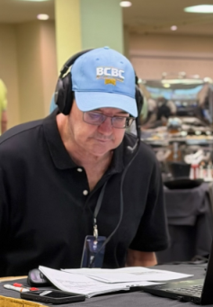

Bob Ike has covered the Southern California racing circuit for over 40 years, where he was the leading public handicapper at countless meets
Enter your email to be notified the second they're posted

Bob Ike has covered the Southern California racing circuit for over 40 years, where he was the leading public handicapper at countless meets. Ike’s graded handicap selections have appeared in the Los Angeles Daily News, San Diego Union-Tribune, Orange County Register and South Bay Daily Breeze.
A lifelong racing fan, Ike got his first taste of racing as an infant, being toted to the Del Mar racetrack well before his first birthday. His passion for racing was handed down from his grandmother and father, who taught him how to read the Racing Form at a young age. “I got hooked early, and went to Del Mar as often as possible. In fact, I was the only kid I knew who never had a summer job,” joked Ike.
Although based in Southern California, Ike has attended most of the Breeders’ Cup runnings, as well as the 1994 and 2007 Kentucky Derbies. Ike also has been to racetracks in Australia and Ireland.
Known for his keen ability to watch races and analyze video, Ike is unmatched at evaluating pace and trip scenarios. “For me, the whole handicapping process starts with watching races and video tape--and putting trip notes in my program. Without laying that foundation, I would feel lost just opening up the Form and reading the past performances. It would be the equivalent of someone trying to make sense of a baseball game by just reading the box score, without actually having watched the game. From there I try to figure out how a race will unfold from a pace and trip standpoint.”
Ike, who is a partner in Horsebills.com and co-host of the Thoroughbred Los Angeles radio show, is a graduate of Occidental College and a member of the school's basketball Hall of Fame.